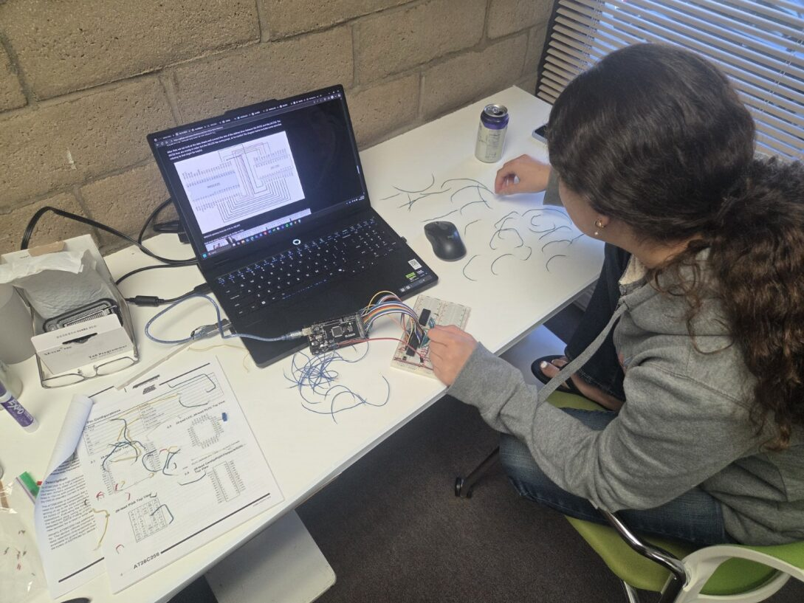
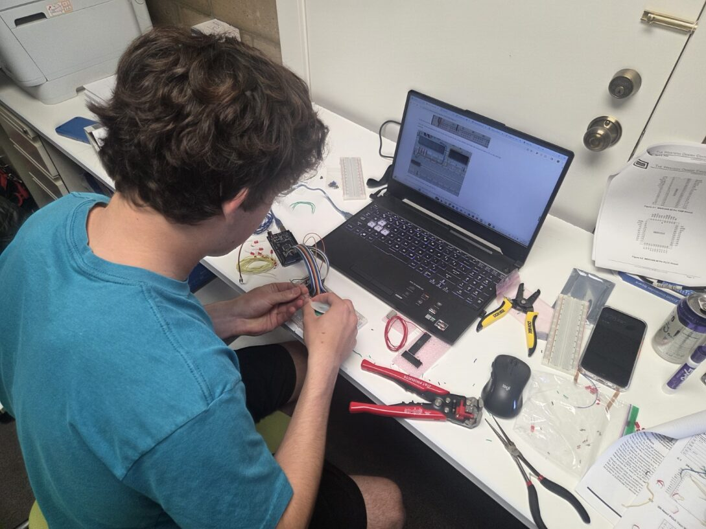
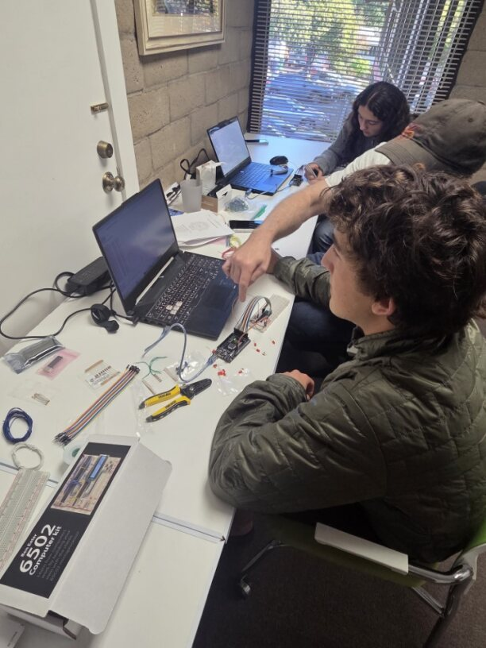
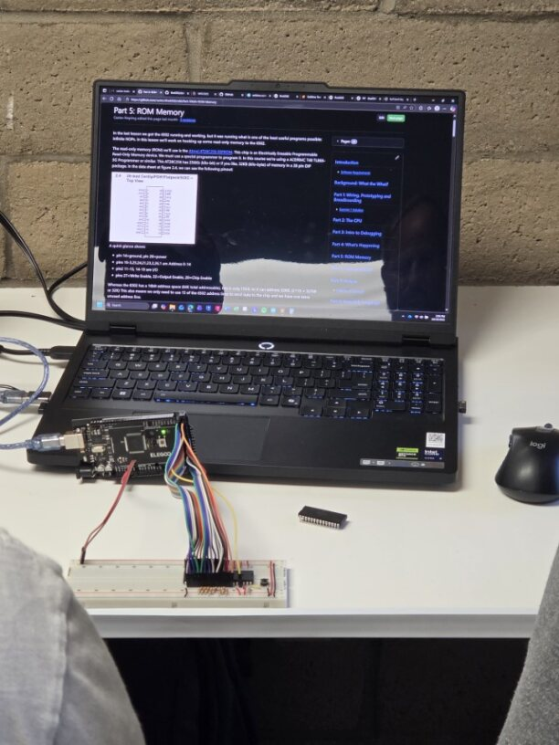
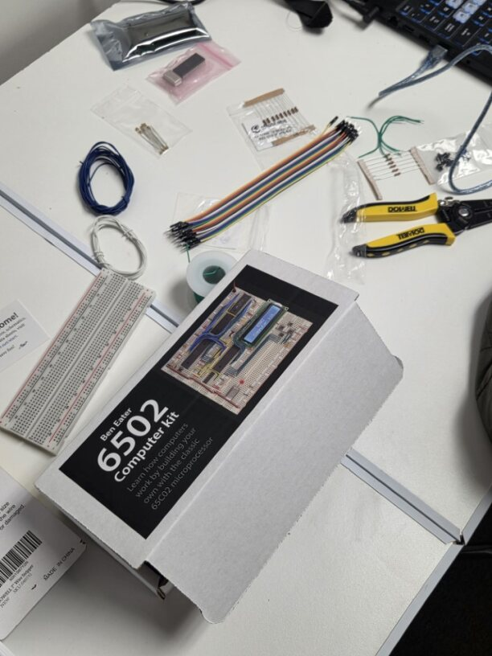
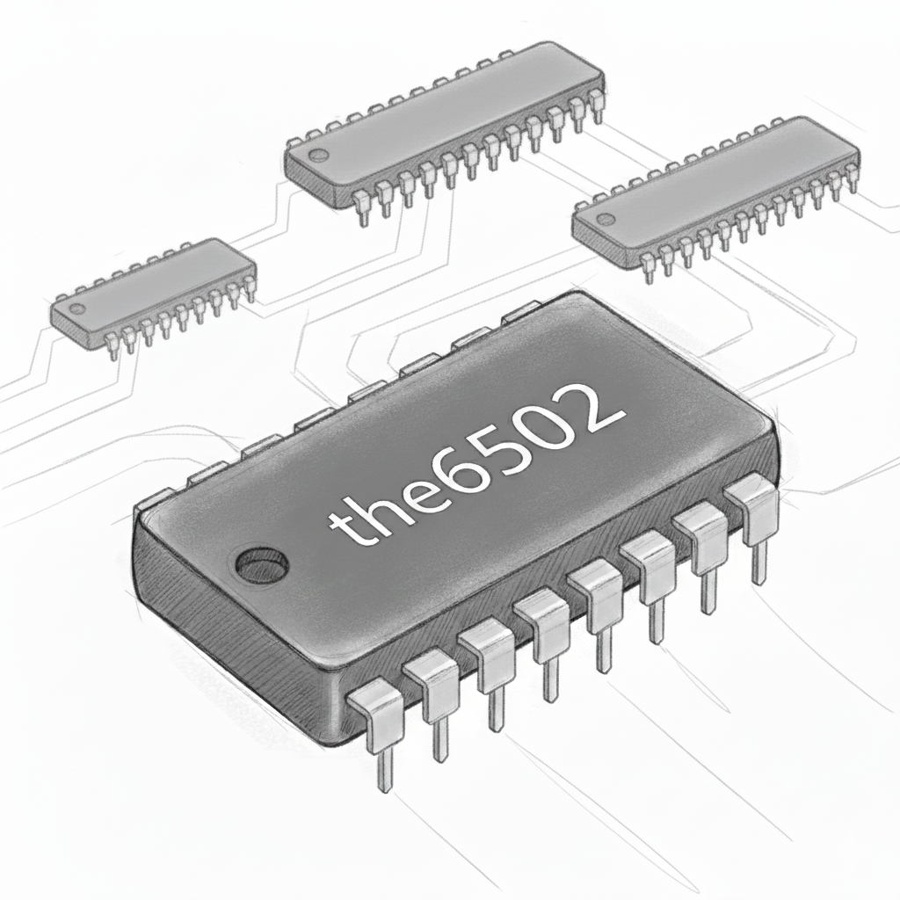

the6502 is a workshop where you can build your own computer from just a few chips, a couple breadboards and some wires.
You'll have the opportunity to learn and understand the parts of a computer, how to configure the parts to work together, and how to write a Hello World program at nearly the lowest possible level.
As a bonus, you'll be working with a historically important CPU, the 6502 which was used for early Apple, Atari, Commodore, Nintendo computers and gaming systems.






Contact
Want to attend or schedule a workshop?
Email:
casten {dot} riepling {at} gmail {dot} com
for details.